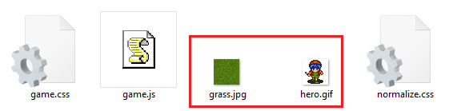
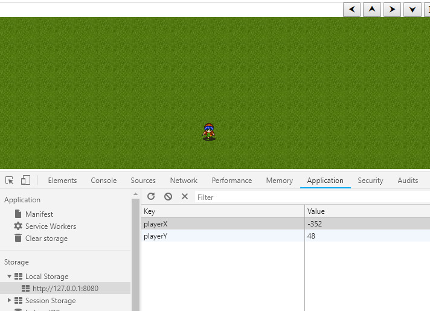

Olá devs!
Nesses últimos tempos andei fuçando várias coisas de Front-end e Gamedev. Uma delas foi um experimento recente que fiz com window.localStorage.
Mas o que consiste no window.localStorage?
Como a documentação do Mozilla diz, é uma propriedade read-only que permite o acesso ao objeto Storage da origem do Document da página.
Isso de forma que ele possa ser memorizado e mantido sem interferência do recarregamento de página, similar aos Cookies e sessionStorage.
De vantagens, localStorage…
- possui um limite de armazenamento de 5MB, bem maior do que o dos Cookies, 4KB;
- não depende de requests HTTP, o que reduz a demanda de cliente-servidor
- não tem prazo de expiração como sessionStorage e Cookies (quando configurados para isso)
- podem ser eliminados durante a limpeza de armazenamento do browser.
Entretanto, são mais restritos em outros aspectos, podendo apenas serem usados no armazenamento local e em documentos same-origin, ou seja, na mesma página.
Este último é uma boa razão para aplicações single page utilizarem, mas não para outras aplicações que dependem do servidor para navegação de páginas do site por exemplo.
Aplicação prática
Bom, voltando ao experimento que fiz, ele é uma demonstração simples que enfatiza o uso localStorage e também da aplicação do conceito de videogame, com movimentação de personagem pela tela por teclado e UI. Eu vejo isso como uma forma mais dinâmica de por em prática o aprendizado.
Após ter um breve conhecimento sobre o localStorage, fiz uma pesquisa para adquirir assets (gráficos de fundos, animações, etc) para cenário e personagem do jogo. Utilizei um dos primeiros que encontrei no Opengameart e Spriters Resource. Aí pronto, já tinha, pelo menos, um “cenário” e “personagem” para me aventurar nisso. O uso do localStorage aqui será para salvar a posição do jogador na tela, através das coordenadas X e Y.

Estrutura de diretório:
- Assets: arquivos css, js, imagens, etc;
- Raiz: onde irá o index.html;
HTML: o “esqueleto”
Inicialmente, fiz um HTML para renderizar os elementos (cenário, personagem, interface) na tela, dando a eles classes e ids reconhecíveis para trabalhar mais fácil pelo CSS e JS depois.
<center>
<form>
<fieldset class="ui">
<div class="controls">
<button class="controls__btn" id="btn_left" type="button">⮜</button>
<button class="controls__btn" id="btn_up" type="button">⮝</button>
<button class="controls__btn" id="btn_right" type="button">⮞</button>
<button class="controls__btn" id="btn_down" type="button">⮟</button>
<button class="controls__btn" id="btn_reset" type="button">Reset Game</button>
</div>
</fieldset>
<fieldset class="screen">
<div class="map">
<div class="player" id="player1"></div>
</div>
</fieldset>
</form>
</center>
A tela do jogo está como o elemento .screen, que abriga o cenário .map e o jogador #player. A interface se encontra no elemento .ui, que abriga o .controls, com os botões de comando pra interagir com o jogador.
Vazio, não? O CSS vai ver isso daí!
CSS: estilos e personalização
Para dar mais personalidade a esses elementos, serão utilizadas algumas regras CSS, as quais serão úteis para dar cores, tamanhos, posições e texturas a eles. Eu preferi utilizar um arquivo CSS externo (assets/game.css) para organizar melhor as coisas.
body,* {
box-sizing: border-box;
}
fieldset {
margin: 0;
padding:0;
border:0;
}
fieldset.screen {
width: 100%;
height: calc(100vh - 28.4px);
}
fieldset.screen .map{
background-image: url(/assets/grass.jpg);
background-position: center center;
width: 100%;
height: 100%;
position:relative;
overflow:hidden;
}
fieldset.screen .map .player{
background-image: url(../assets/hero.gif);
width:32px;
height:32px;
top:50%;
left:50%;
position:absolute;
}
Recomendo fortemente incorporar o normalize.css antes desse CSS para resultados melhores, como eliminar margins desnecessários.
Dessa forma, dentro da tag <head> inserimos:
<link rel="stylesheet" href="assets/normalize.css"/>
<link rel="stylesheet" href="assets/game.css"/>
Melhorou! Agora vamos fazer isso funcionar!
Javascript: variáveis, funções, mecânicas, etc
Agora a aventura começa de verdade. Utilizando o arquivo javascript game.js, dentro do diretório assets/ , serão criadas as regras de negócio e finalmente o uso do localStorage para o projeto. Dessa forma, declaramos no HTML, no fim da tag <body> a chamada do game.js:
<script src="assets/game.js"></script>
Começamos declarando as variáveis utilizadas o longo do processo.
//instâncias do dom
const player = document.querySelector('#player1');
const btnLeft = document.querySelector('#btn_left');
const btnUp = document.querySelector('#btn_up');
const btnRight = document.querySelector('#btn_right');
const btnDown = document.querySelector('#btn_down');
const btnReset = document.querySelector('#btn_reset');
//variáveis auxiliares como coordenadas, velocidade e tamanho do player
let _xx = 0;
let _yy = 0;
let xx = 0;
let yy = 0;
let spd = 16;
let playerSize = 32;
//vars delimitadoras do mapa
let mapWidth = document.querySelector('.map').offsetWidth;
let mapHeight = document.querySelector('.map').offsetHeight;
//vars delimitadoras do movimento do player pra ele não sair da tela
const minX = -mapWidth/2;
const minY = -mapHeight/2;
const maxX = mapWidth/2-playerSize;
const maxY = mapHeight/2-playerSize;
O objeto localStorage, será essencial e não poderá deixar de ser declarado também.
//instância do localstorage myStorage = window.localStorage;
a função savePos, será essencial para alimentar as variáveis do localStorage playerX e playerY.
//função que seta as variáveis do LocalStorage com as coordenadas do player
function savePos(storage,x,y){
storage.setItem('playerX',x);
storage.setItem('playerY',y);
}
A função movePlayer serve para mover o personagem pela tela, de acordo com a direção apontada (com base nos ângulos), atualizar sua posição na tela, e chamar a savePos para salvá-las no localStorage.
//função de movimento do personagem
function movePlayer(_player,x,y,dir){
//atualiza as coordenadas do jogador no DOM dentro dos limites do mapa
switch(dir){
case 0: if (xx<maxX) xx += spd; else xx=maxX; break;
case 90: if (yy>minY) yy -= spd; else yy=minY; break;
case 180: if (xx>minX) xx -= spd; else xx=minX; break;
case 270: if (yy<maxY) yy += spd; else yy=maxY; break;
}
//css inline pra printar a posição do personagem na tela, de maneira responsiva
player.setAttribute('style', 'left:calc(50% + '+x+'px) !important;top:calc(50% + '+y+'px) !important;');
//após movimentar o player, memoriza suas coordenadas x e y pela função savePos
savePos(myStorage,x,y);
}
Com as variáveis declaradas e funções criadas, as regras de negócio para a execução do projeto começam. Nela, primeiro checamos se há suporte ao local storage (if(typeof(Storage) !== “undefined”)); chegamos a existência das variáveis dele playerX e playerY e criamos laços de comunicação com os botões de comando através do addEventListener para comandarem o jogador.
//checa se tem suporte ao localstorage
if(typeof(Storage) !== "undefined") {
//carrega as cordenadas do localstorage ao iniciar
_xx = parseInt(myStorage.getItem('playerX'));
_yy = parseInt(myStorage.getItem('playerY'));
if (myStorage.playerX === undefined) _xx=0;
if (myStorage.playerX === undefined) _yy=0;
xx = _xx;
yy = _yy;
movePlayer(player,xx,yy);
//click listeners + movimentação
btnLeft.addEventListener("click", function(){
movePlayer(player,xx,yy,180);
});
btnUp.addEventListener("click", function(){
movePlayer(player,xx,yy,90);
});
btnRight.addEventListener("click", function(){
movePlayer(player,xx,yy,0);
});
btnDown.addEventListener("click", function(){
movePlayer(player,xx,yy,270);
});
//botão de reset do localStorage, limpa as variáveis usadas
btnReset.addEventListener("click", function(){
xx=0;
yy=0;
myStorage.clear();
movePlayer(player,xx,yy,270);
});
} else {
// mensagem de erro
console.log('Sem suporte a web storage')
}
De bônus, implementei o movimento por setas direcionais graças a uma thread do Stack Overflow.
document.onkeydown = checkKey;
function checkKey(e) {
e = e || window.event;
if (e.keyCode == '38') {
// up arrow
movePlayer(player,xx,yy,90);
}
else if (e.keyCode == '40') {
// down arrow
movePlayer(player,xx,yy,270);
}
else if (e.keyCode == '37') {
// left arrow
movePlayer(player,xx,yy,180);
}
else if (e.keyCode == '39') {
// right arrow
movePlayer(player,xx,yy,0);
}
}
Para rodar o projeto, você pode utilizar o recurso do Node.js http-serve (saiba mais), ou subir em algum servidor HTTP pronto.
Após essa implementação, ao rodarmos o projeto no navegador, podemos consultar o localStorage da página pelo inspetor. Pelo Chrome por exemplo, em Application > Storage > Local Storage, como no anexo a seguir.

Lá estarão as variáveis playerX e playerY armazenadas, onde são alimentadas com novos valores de acordo com as coordenadas X e Y, a cada “passo” que o jogador percorre pela tela. Ao dar um F5 na página, veremos que o personagem continua na mesma posição, graças ás coordenadas X e Y gravadas pelo localStorage.
Esta demo também está disponibilizada online (sem texturas).
Conclusão
O localStorage, mesmo sendo restrito a uma origem, ele dispõe de um armazenamento generoso e permanência no browser sem expiração.
Isso poderá ser bem útil, como disse anteriormente, em Single Page Applications, como aplicações web e jogos de browser, para memorizar dados do navegador de forma mais rápida e precisa.
Disponibilizei os arquivos utilizados neste projeto pelo Gitlab:
https://gitlab.com/bcs9000/js-local-storage